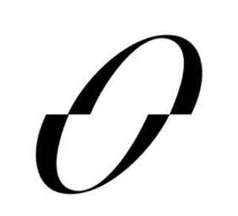

Trade Mark Journal No.2025/030 25 July 2025
UK00004233930 15 July 2025 (9,14,18,25,35)

- Class 9
- Downloadable mobile application software for the retail of fashion and activewear products; ski helmets; snowboard helmets; protective helmets for sports; head guards for sports; mouth guards for sports; smartwatches, wearable activity trackers; eyewear; sunglasses.
- Class 14
- Jewellery; watches; cuff links; tie pins; tie clips; key rings; key chains; key charms; alarm clocks; stop clocks; jewellery cases; watch cases.
- Class 18
- Bags, wallets and other carriers; umbrellas; bags, wallets and other carriers made of leather and imitations of leather; belts; key cases; credit card cases and holders; leather laces. .
- Class 25
- Clothing, footwear, headgear; menswear; womenswear; activewear; tops; sweaters; tee-shirts; trousers; dresses; outerwear; coats; jackets; jeans; underwear; bras; briefs; pants; socks; tights; leggings; dresses; skirts; shorts, shirts; swimwear; trouser straps; gloves; scarfs; pockets squares; bath robes; money belts; sweat-absorbent clothing; sweat-absorbent socks; sweat-absorbent underclothing; waterproof clothing; shoes; boots; caps; headbands; clothing and footwear for sports and gymnastics; ski gloves; sports singlets; football shoes; gymnastic shoes; ski boots. .
- Class 35
- Retail and online retail services connected with ski helmets, snowboard helmets, protective helmets for sports, head guards for sports, mouth guards for sports, smartwatches, wearable activity trackers, eyewear, sunglasses, jewellery, watches, cuff links, tie pins, tie clips, key rings, key chains, key charms, alarm clocks, stop clocks, jewellery cases, watch cases, bags, wallets and other carriers, umbrellas, bags, wallets and other carriers made of leather and imitations of leather, belts, key cases, credit card cases and holders, leather laces, clothing, footwear, headgear, menswear, womenswear, activewear, tops, sweaters, tee-shirts, trousers, dresses, outerwear, coats, jackets, jeans, underwear, bras, briefs, pants, socks, tights, leggings, dresses, skirts, shorts, shirts, swimwear, trouser straps, gloves, scarfs, pocket squares, bath robes, money belts, sweat-absorbent clothing, sweat-absorbent socks, sweat-absorbent underclothing, waterproof clothing, shoes, boots, caps, headbands, clothing and footwear for sports and gymnastics, ski gloves, sports singlets, football shoes, gymnastic shoes and ski boots.
ASOS plc
Representative: ASOS PLC